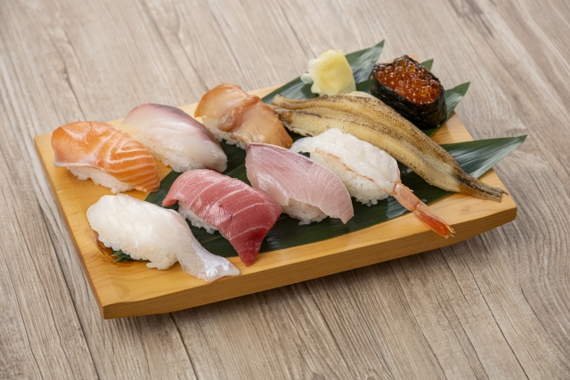
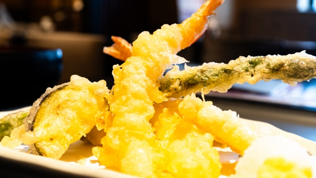
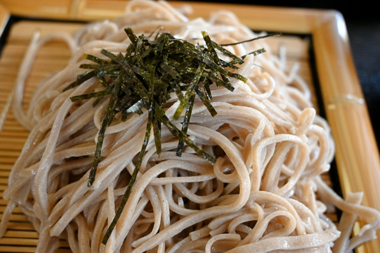
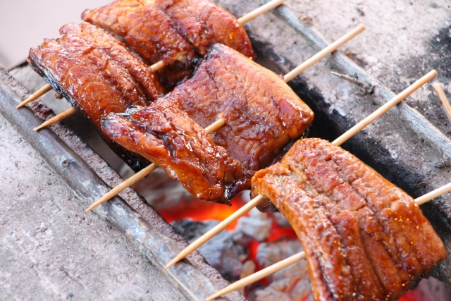

和食
和食の解説
寿司
酢飯の上に新鮮な魚介類や卵、野菜などをのせた料理。握り寿司、巻き寿司、押し寿司など形態は多様で、素材の鮮度と調味のバランスが味の決め手。
-
天ぷら
海老や白身魚、舞茸やかぼちゃなどの具材に薄い衣をまとわせ、油でサクッと揚げた料理。揚げたてに塩や天つゆを添えていただくのが一般的。
-
ソバ
そば粉を練った麺を温かい汁で食べる「かけそば」、冷たいつゆに浸す「ざるそば」などで提供。そば粉の香りとツルリとした食感が特徴で、全国各地にご当地そばも多数。
-
うなぎのかば焼き
開いたうなぎを串に通し、醤油・みりん・砂糖ベースのタレを塗りながら何度も焼き上げる一品。香ばしい甘辛いタレがご飯と相性抜群で、土用の丑の日に食べる習慣も有名。